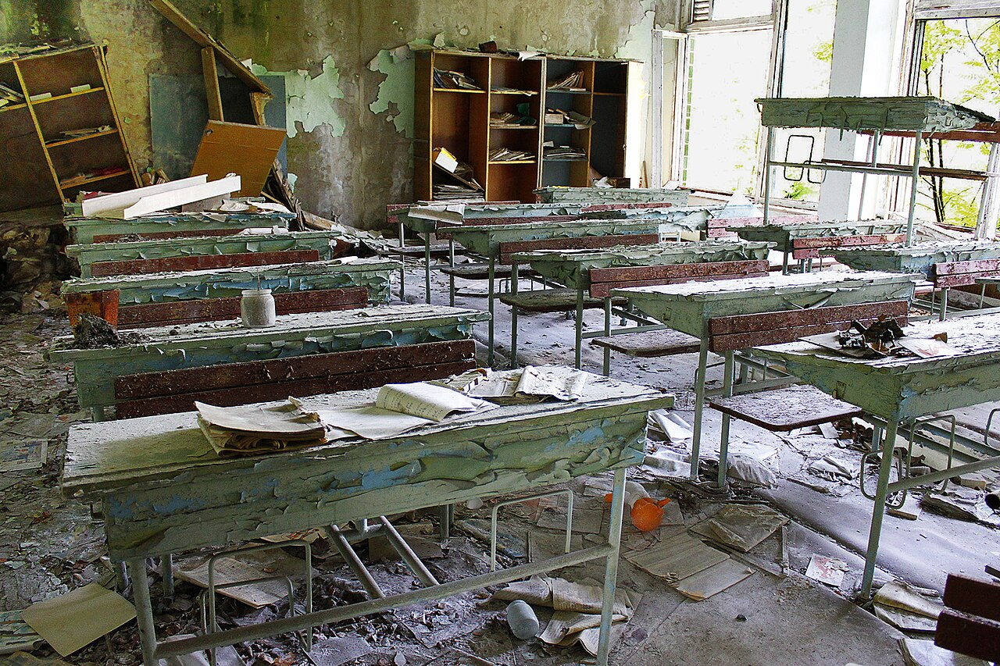

Perimeter dispatch

EDITORIAL ARCHIVE / ISSUE 033
If you can hear us, answer
The batteries should last till morning. Crossing the Perimeter? Read the shelter notes. Waiting for word? Try the letters archive. We’re still on the old frequency.
Open the letters archive →F&B Network 0.47 — new addresses
12 standalone pages: field guides, research and editorial dossiers, offline worksheets. Each page identifies its provenance and limits.
New F&B features
Four guides, four stories and four local tools. Game actions remain inside the laptop.
Field notes
- The first hour beyond the perimeter
Do not fill your bag with everything you find. Check your weapon, compatible ammunition, bandages, treatment and water first. Choose a short route with a clear way…
- Emissions: shelter before loot
Stop looting when an emission warning arrives. Use shelter recognised by the game; a roof alone does not make a building safe. Do not enter an unfamiliar…
- Writing a useful field report
Include the location, landmark, observation time and what you actually saw. “Heard growling by the bus” is more useful than claiming a chimera is certainly there.…
- When to turn back
Set a return condition before leaving: no bandages, little compatible ammunition or a load that prevents retreat. Decide this at the campfire before valuable loot…
Reference sites
- Mutant atlas
Behaviour, tracks and field encounters.
- Beyond the Perimeter
Shelter, routes and overnight stops.
- They Never Returned
Diaries and letters about the missing.